【川中島の戦い】総合サイト
【デジタル博物館】WordPress更新マニュアル
2024.3.15 更新
メニュー
収蔵品を登録する
- 画面上部の「新規投稿を追加」をクリックします。
- ▼「デジタル博物館」新規登録画面
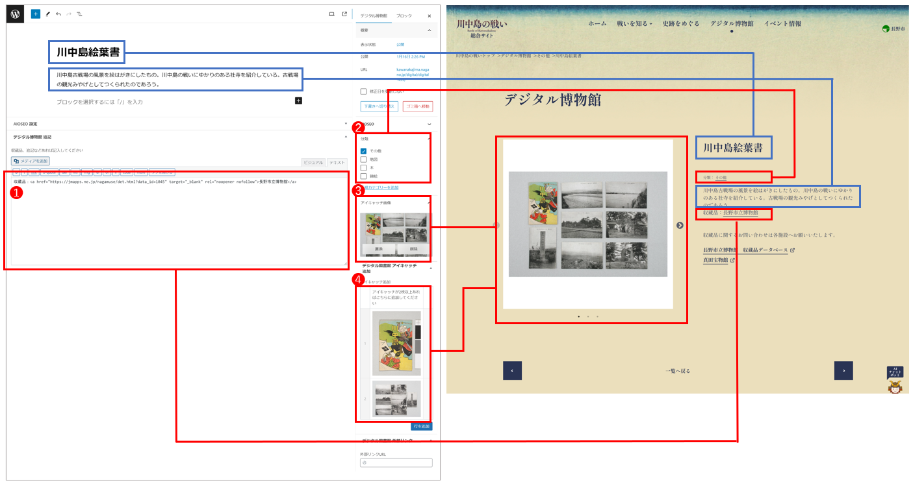
- 収蔵品の注意書き
収蔵品のウェブページへのリンクを貼ります。
長野市立博物館所蔵の場合
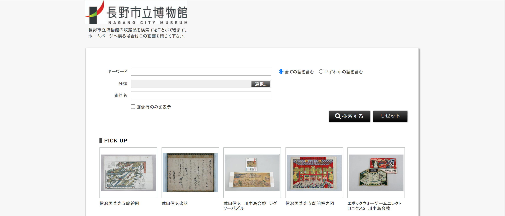
長野市立博物館の収蔵品検索画面で、該当の所蔵品を検索します。
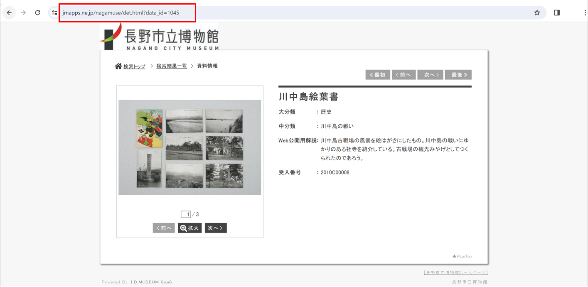
該当の収蔵品のURLをコピーします。
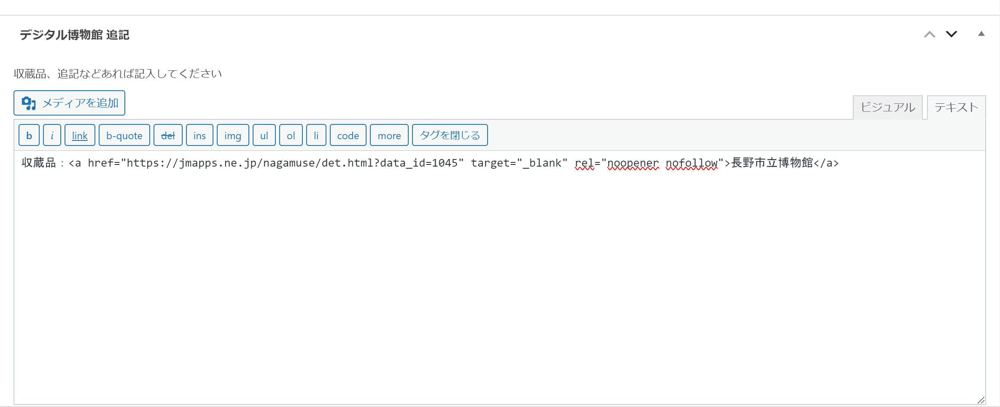
下記コードの【"●●●●●●●●●●"】内をコピーしたURLに書き換え、フォーム内に入力してください。
収蔵品：<a href="●●●●●●●●●●" target="_blank" rel="noopener nofollow">長野市立博物館</a>
真田宝物館所蔵の場合
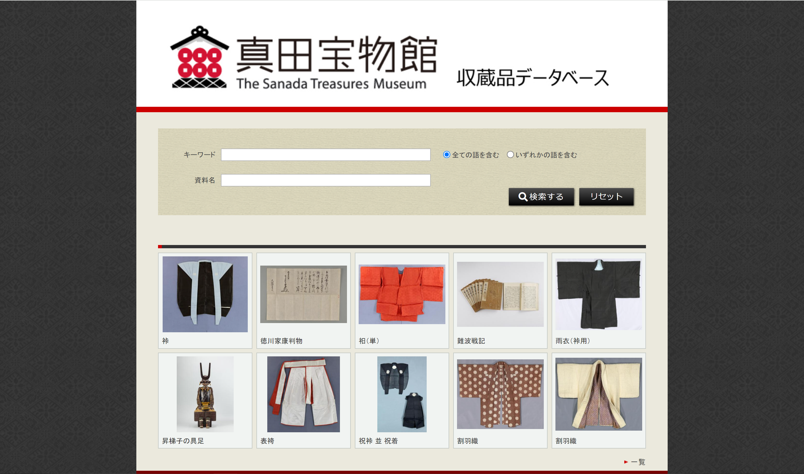
真田宝物館の収蔵品検索画面で、該当の収蔵品を検索します。
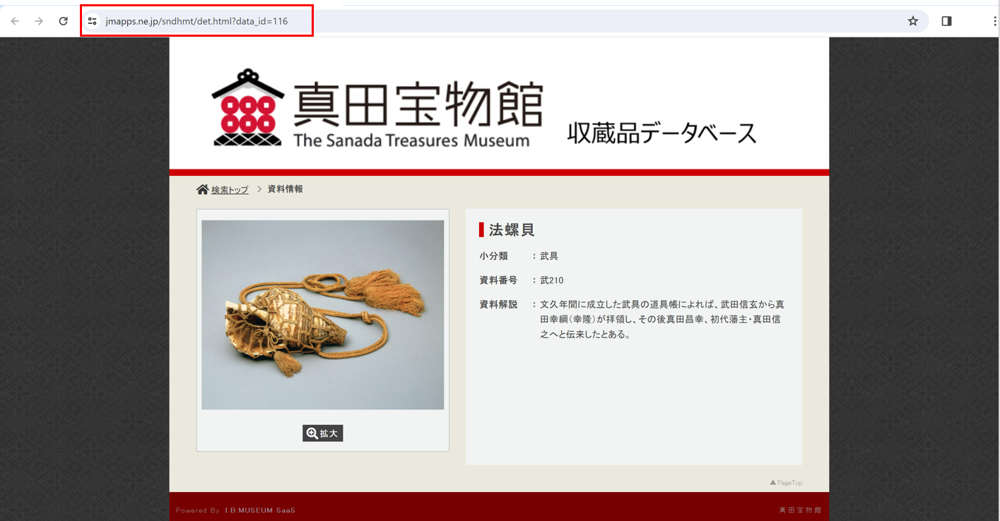
該当の収蔵品のURLをコピーします。
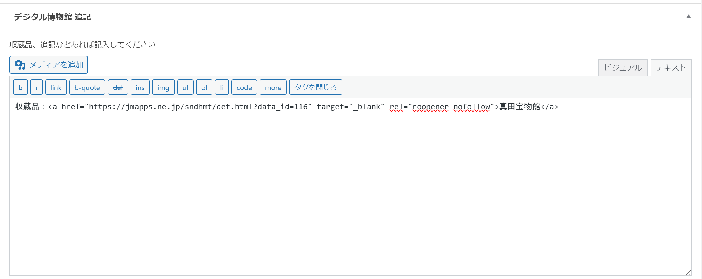
下記コードの【"●●●●●●●●●●"】内をコピーしたURLに書き換え、フォーム内に入力してください。
収蔵品：<a href="●●●●●●●●●●" target="_blank" rel="noopener nofollow">真田宝物館</a>
- カテゴリー
該当するカテゴリーにチェックを入れます。各収蔵品にカテゴリーが表示されます。
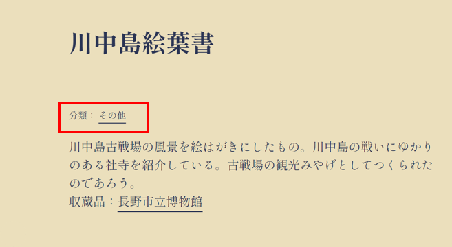
- アイキャッチ画像
アイキャッチ画像をアップロードします。各収蔵品1枚目の写真と、デジタル博物館の収蔵品一覧に表示されます。
アイキャッチ画像の設定方法
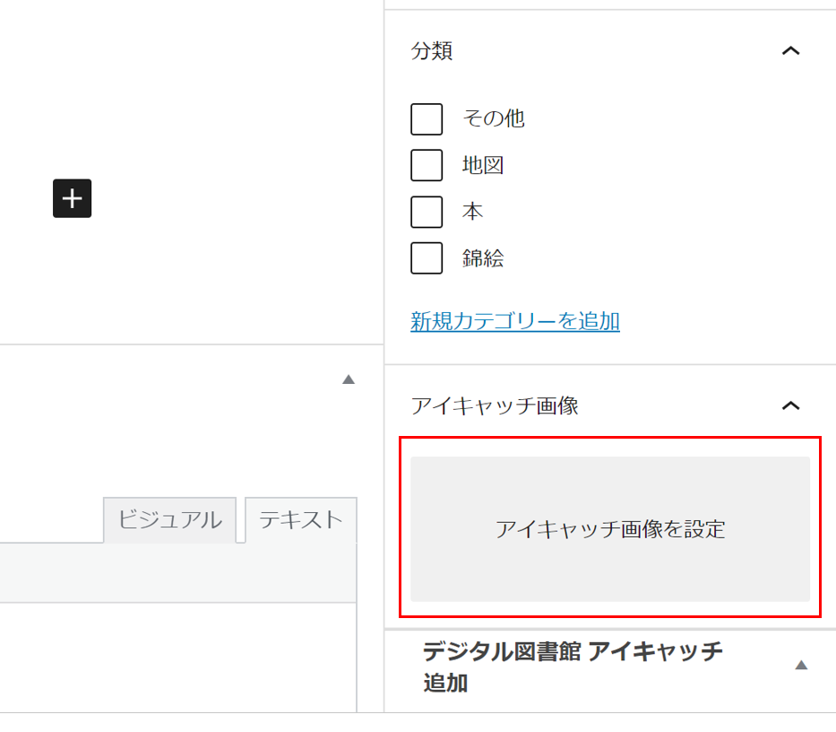
「アイキャッチ画像を設定」をクリックします。その後は画像のアップロード方法と同じです。
※画像の詳しいアップロード方法はこちら
※画像のリサイズ方法はこちら
- アイキャッチ画像の追加
収蔵品の写真が2枚以上ある場合はここから追加します。
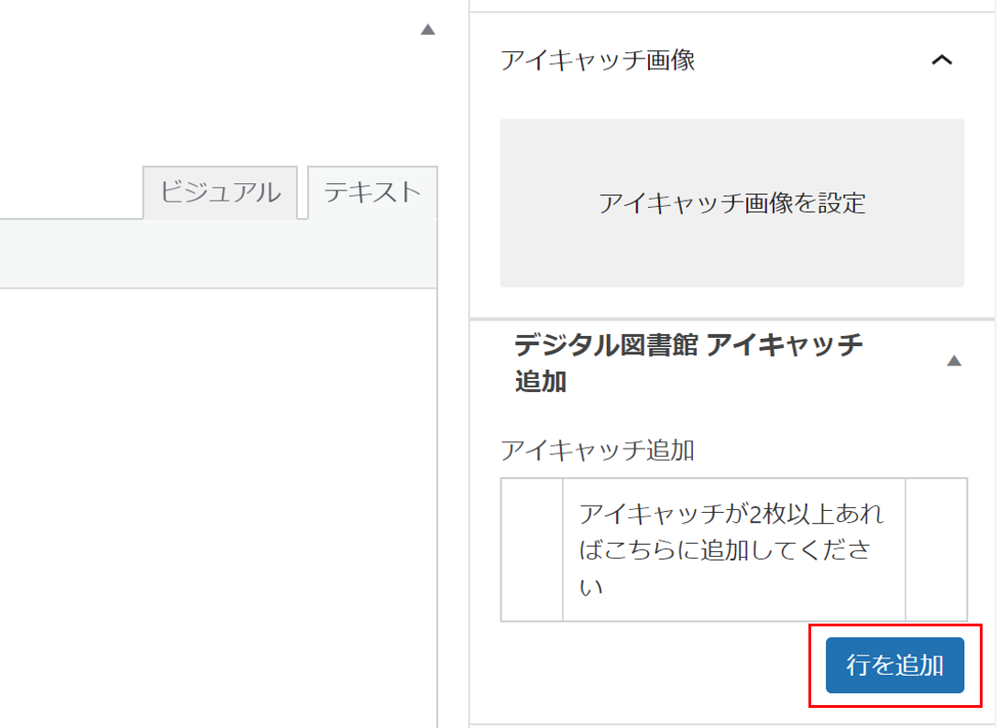
「行を追加」をクリックし、画像をアップロードします。
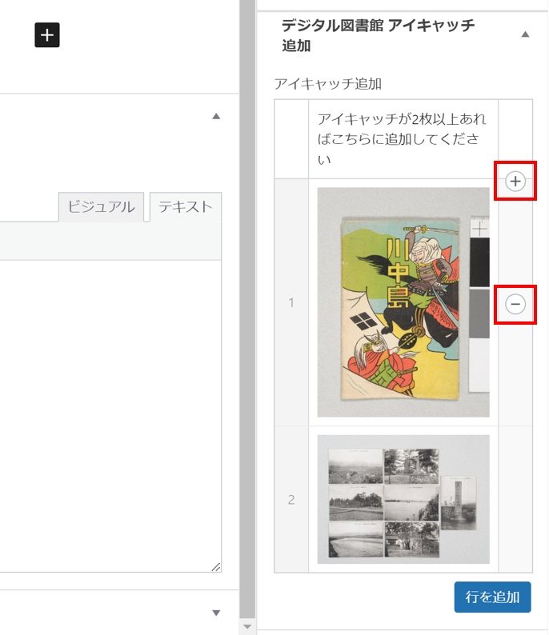
既に追加した画像の前に表示する画像を追加する場合は「＋」を、追加した画像を削除したい場合は「-」をクリックしてください。
- 公開*（必須）
青い「公開」ボタンを押してください。記事が公開されます。
公開日時が新しいものから順番にHP上に並びます。
- 公開した「イベント情報」を編集・削除する
※編集方法はこちら